Trails near North East Los Angeles
It took me a few years to appreciate LA trails, which outside of instagrammable landmarks don't have the typical hiking destination draw. Like in the movies, set and timing are everything. What LA lacks in lushness it more than makes up with cloud-free skies, frequent fog, and towering mountains. The views are the appeal, best experienced at dawn for the sunrise. Bonus: avoiding the heat and crowds.
North East LA hiking, most hikes within a 10-20 minute drive from Eagle Rock
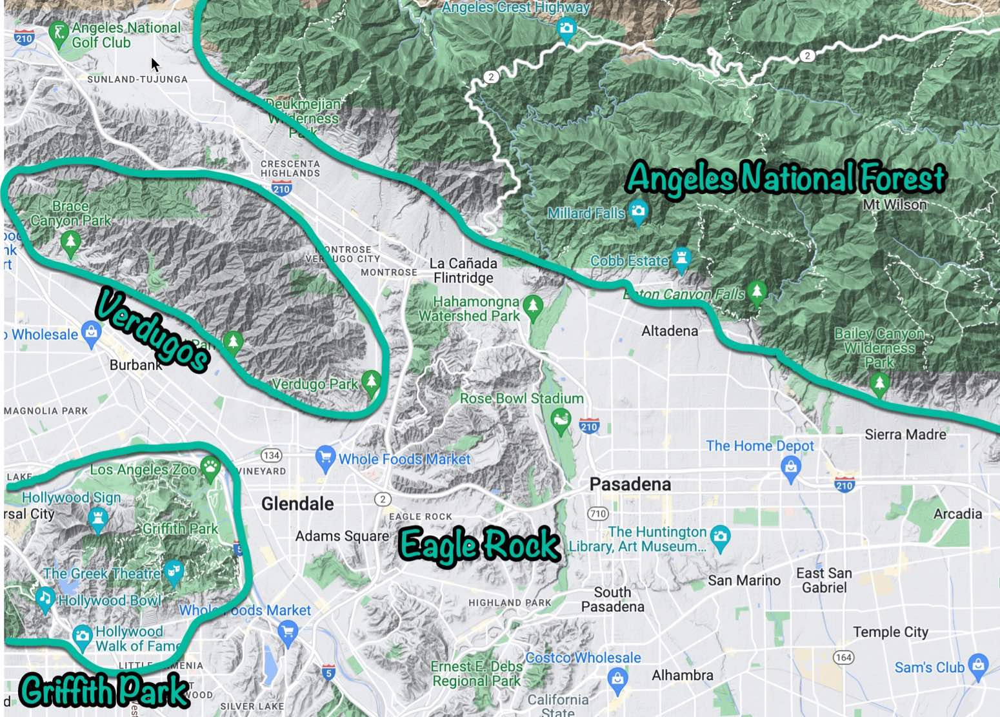
Despite the lack of traditional seasons in Southern California, LA hiking experiences change throughout the year. Trails are at their greenest in the spring, bringing superblooms, fragrant california sage, and towering + flowering yucca. June gloom is a misnomer. The summer's thick fog and low cloud cover is ascendable, opening up celestial views of the city of angels. The late rising sun and the earth's ideal tilt make for spectacular sunrise colors in the fall. For a few weeks in the winter, snow will top trails in Angeles National forest, making for fun microspike execursions. Where else can you be in the snow in the morning and 70 degree beach weather in the afternoon?
Below are my goto NELA hikes in nearby Griffith Park, Verdugo Mountains, Angeles National Forest, as well as a a few further favorites
Griffith Park
The go to destination for out of towners for views of the Observatory and famed Hollywood sign, Griffith Park has it all, but gets crowded quickly. If you start your hikes earlier or on the northern part of the park, you’ll run into smaller crowds. Peaks top off at just under 2k feet.
Hollywood Sign via Canyon Drive
6.0mi, 1.2k ft elevation gain | FIRETRAIL - RUNNING - LIMITED SHADE - VIEWS - CROWDED
The view behind the sign and the easy firetrail are the main draw here. This is the go to hike I take out of towners on. Early starters will be rewarded with solitude, fantastic for an intermediate trail run.
Stereotypical but not less beautiful view from behind the hollywood sign
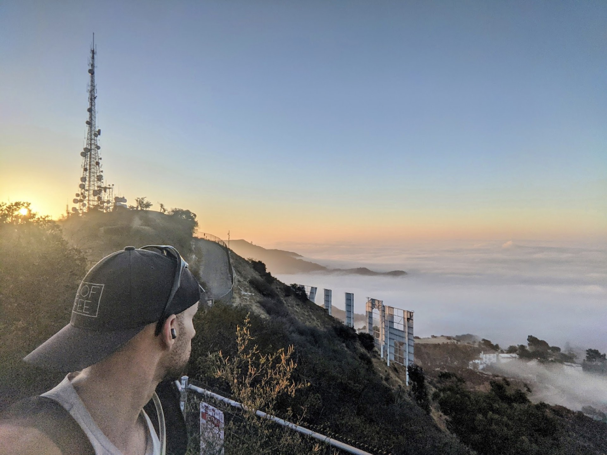
Mount Hollywood via Amir’s Garden
4.0mi, 1.1k ft elevation gain | MOSTLY FIRETRAIL - SOME SHADE - VIEWS
One of my favorite Griffith Park trails to avoid the crowds (at the trailhead) but still take in the views. Always folks at the top, though, no matter when you start.
Southwestern sunrise from Mt. Hollywood
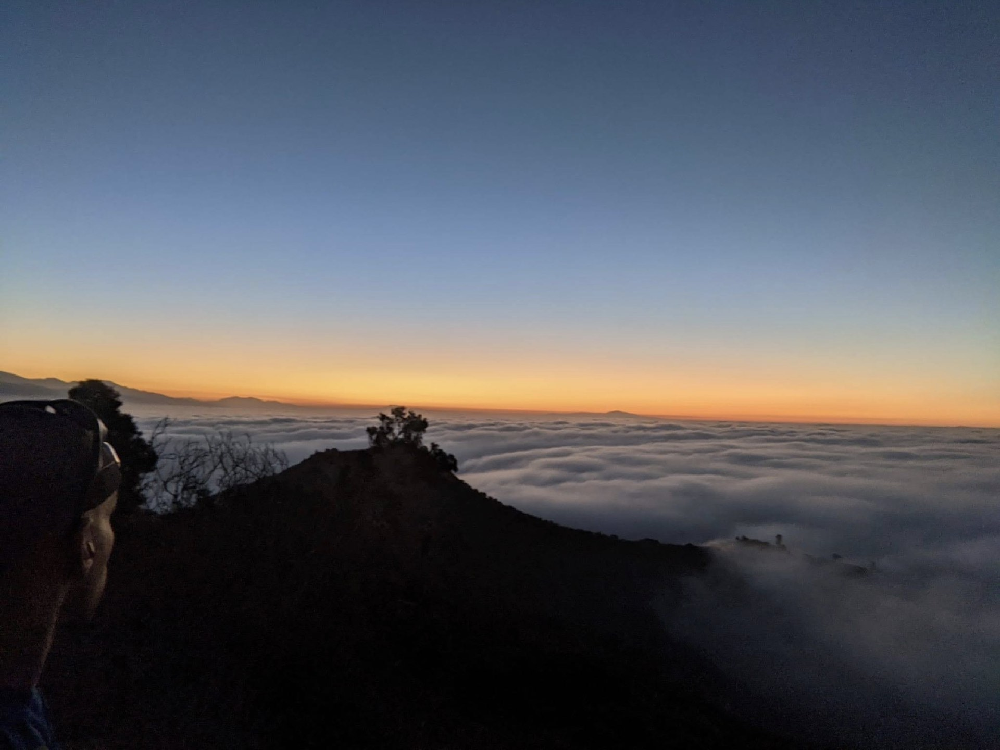
Hollywood Sign and The Wisdom Tree
7.6mi, 2.0k ft elevation gain | SOME SHADE - VIEWS - FIRE TRAIL / SINGLE TRACK
Great trail that hits celebrated Griffith Park destinations (view of the hollywood sign and the Wisdom Tree) but generally avoids the crowds. The single track ridge in the last mile on the way to the wisdom tree has some scrambling, but less frequented and one of the best ways to see the famed Italian stone pine in Griffith during the pandemic.
Verdugos+
With views from up to 3k peaks of Griffith Park, DTLA, and the Angeles National Forest, the Verdugos are a 10-20 minute drive from Eagle Rock, have well maintained firetrails, and plenty of spots to take in the view and have a picnic. My typical togo destination on days with thicker fog and low-lying inversions
Mount Thom via Las Flores Motorway+
4.6mi, 1.2k ft elevation gain | FIRETRAIL - RUNNING - NOSHADE - VIEWS
Less than 10 min drive from my homebase in Eagle Rock, this is my goto sunrise and trail running hike. Limited shade but also fewer crowds. Great 270 degree views, especially great on foggy mornings or sunset. Trailhead starts in a neighborhood, be considerate if you're starting early.
Chandler Motorway
6.1mi, 1.5k elevation gain | FIRETRAIL - RUNNING - NOSHADE - VIEWS
Similar to Mount Thom, this hike ends at a subpeak with a youngish italian stone pine and picnic tables. The perfect destination to do a picnic or trail beers with friends. Firetrail all the way up, great for trail running.
Picnic table and Italian Stone Pine at the end of the motorway
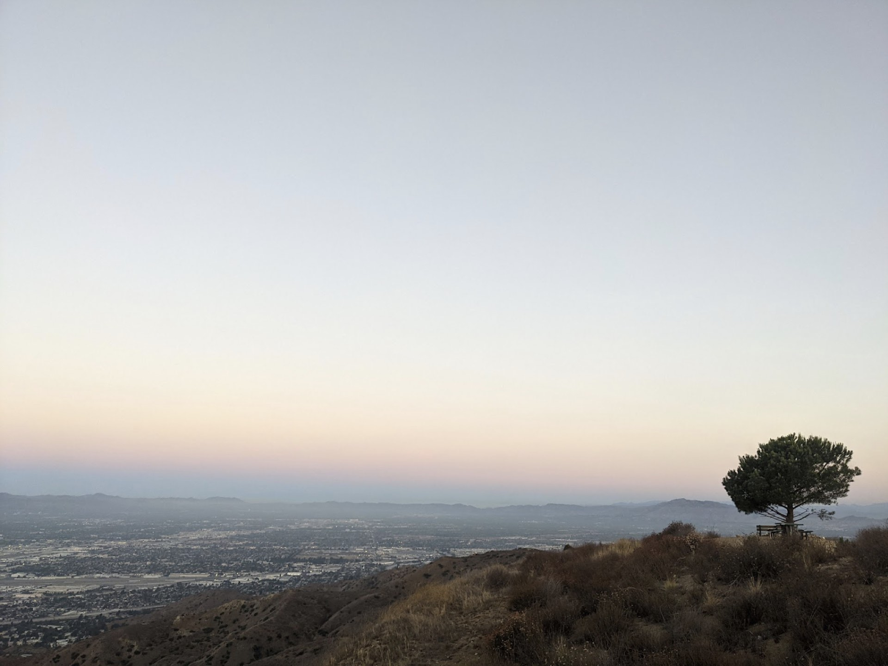
La Tuna Canyon Out and Back
7.5mi, 1.4k elevation gain | FIRETRAIL - RUNNING - NOSHADE - VIEWS
This is a simple firetrail that has a gentler grade and is great for sunrise runs. Follow the recording from the link above (instead of the loop) to avoid the scrambling.
Cherry Canyon Park and Lookout Tower
4.6mi, 900 ft elevation gain | LIMITED SHADE - SOME VIEWS - FIRETRAIL - RUNNING
Technically not in the Verdugos but in nearby rolling hills, this is an easy, somewhat rocky trail that’s easy to access and has good (lower altitude) views of NELA / DTLA / etc. Perfect for those lower key hiking days.
Angeles National Forest
With visible peaks towering 5k feet and hidden ones above 10k, Angeles National Forest is relatively unknown by most but loved by many. This is my destination when I want solitude, elevation, and distance. Fortunately, there are plenty of accessible trailheads just a short drive away--these are some of my favorites within 20 minutes:
Earl Canyon Mountainway
6.7mi, 2.0k ft elevation gain | FIRETRAIL/SINGLE TRACK - RUNNING - NO SHADE - NOT CROWDED
Starts off on a steepish firetrail that transitions to a single track. I’ve done this hike a half a dozen times and have never seen a person on the way up. Trail ends at a helicopter landing pad along with 270 degree views of LA and Angeles mountains. Perfect for solitude and amazing on a foggy day.
Just above the fog layer at the end of the trailhead
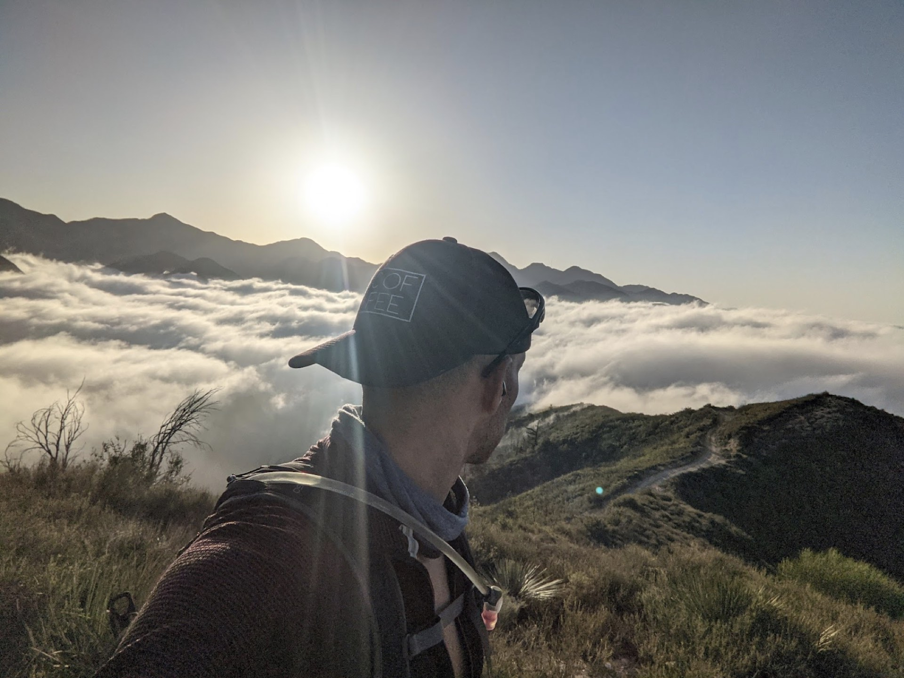
Tee Pee Trail
5.1mi, 1.0k elevation gain | FIRETRAIL/SINGLE TRACK - RUNNING - NO SHADE - NOT CROWDED
The first trail up the 2 into Angeles, this is a great fire trail for running relative to others since it's only an 8% grade. Limited views until a mile in, but then opens up to views of LA. Trail ends at a Tee Pee, but you can continue all the way to Lukens
Crescenta View Trail
6.3mi, 2.2k ft elevation gain | SINGLE TRACK - LIMITED SHADE - NOT CROWDED - VIEWS
Rocky trail that follows a dried river bed and then meanders up. Great views post 1.5mi as well as rock circles and other random hiker vantage points. My favorite nearby trial the day after it snows--can often see snow at around 3k! Surreal to experience that in LA. Also the starter trail on the way to Mt Lukens
Echo Mountain via Sam Merrill Trail
5.4mi, 1.4k elevation gain | MOSTLY SINGLE TRACK - NO SHADE - CROWDED
A popular trail that brings you to echo mountain, once a popular 1900s destination that has since turned to ruins in the mountains. Great hike to take in a view and have a picnic at the peak.
Fern Truck, Brown Mountain and El Prieto Trail Loop
7.6mi, 1.4k elevation gain | MOSTLY SINGLE TRACK - MUCH SHADE - CROWDED
Great easy trail to do if you’re looking for trees and shade.
El Prieto Loop
2.7mi, 600ft elevation gain | MOSTLY SINGLE TRACK - MUCH SHADE - CROWDED
Similar to Fern truck, but not as long
Henninger Flats Trail
5.5mi, 1.4k ft elevation gain | FIRE TRAIL - NO SHADE - VIEWS
Henninger Flats is first come, first serve walk in campground and one of LA’s best known secrets. Hot and steep until you reach the campground, which is beautifully shaded with lots of great history.
Perfect day above the inversion
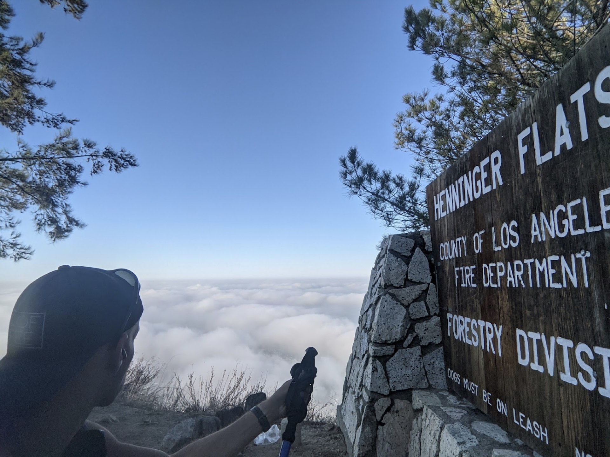
Eaton Canyon Trail
4.4mi, 520ft elevation gain | SOME SHADE - WATERFALL - CROWDED
Flattish trail that parallels a river. Rocky and scrambly at places. Get’s especially crowded and popular with families.
Waterfall at the end of Eaton Canyon
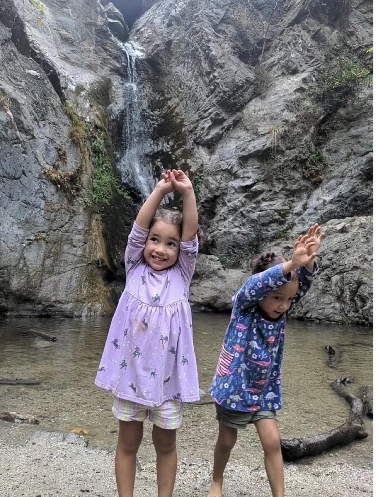
Further Favorites
10mi+ trails in Angeles National Forest and San Gabriels, many of which make LA hiking aficionado bucket lists. Up to an hour's drive away.
Inspiration Point Loop
10mi, 2.8k elevation gain | SHADE - VIEWS - SOMEWHAT CROWDED
This is a beautiful primarily single-track trail that travels through crests, a shaded canyon with oak/bay/pine trees, and occasional tree cover that ends at a viewpoint. Mountain bikers often barrel down the back part of the trail so be alert. The first part of the trail gets crowded so you'll have to pass a lot of folks on the way down no matter when you start. But the trail is worth it
Easy to see why they call it inspiration point
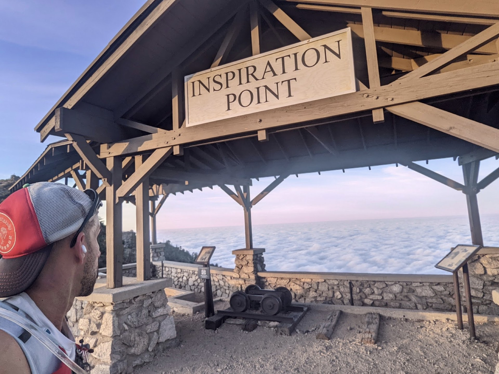
Mt Baldy Notch Trail
11mi, 3.9k elevation gain | SOME SHADE - VIEWS - CHALLENGING
This is an LA bucket list hike just an hour drive from NELA. Starts off rocky and forested and then transitions to rocky and bare. The back half of the hike is along a ridge and stopovers at a Ski lodge, perfect for lunch and a beer. You can shorten the hike by taking the trail lift down. Best done around the summertime when the snow is absent/minimal.
Mount Wilson Toll Road Climb
16.9mi, 4.2k elevation gain | ALMOST ALL FIRETRAIL SOME SHADE - VIEWS - CHALLENGING
An LA bucket list hike. Limited crowds and decent views on the way up. I hiked it during the pandemic and the observatory was closed, but when it’s open there’s a restaurant on the top, a welcome reward after a mile of vertical gain.
Lucked out on my way to Mt Wilson and got this perfect inversion layer
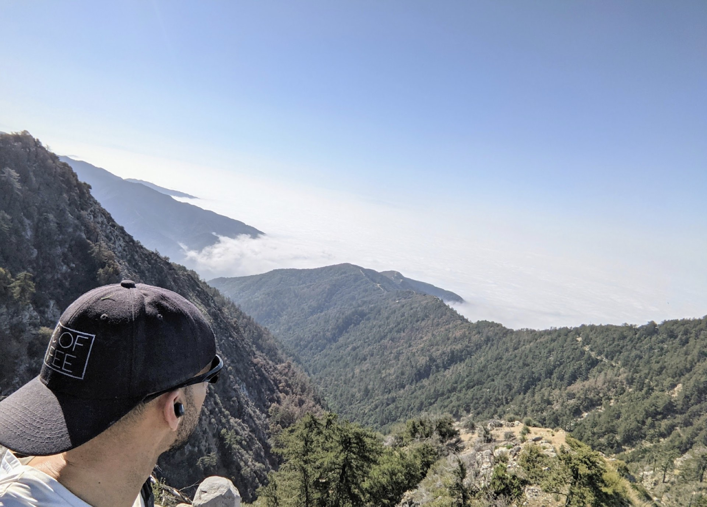
Mount Lukens Via Dunsmore Canyon
9.9mi, 2.8k elevation gain | SOME SHADE - VIEWS
Mt Lukens and Mt Wilson are the two famed viewable peaks from NELA. This hike is a continuation of the Crescenta view trail, and a ton of fun in microspikes if you're lucky enough to get snow.
Mt Lukens post snow in December
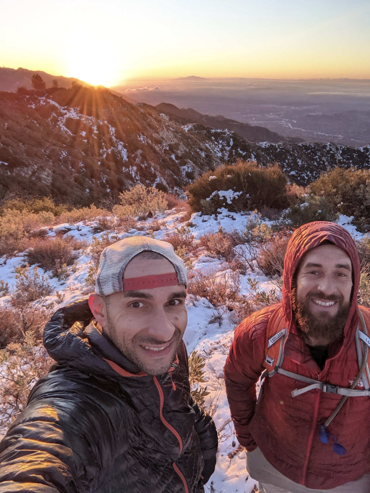
Strawberry Peak Trail via Redbox Canyon
7.2mi, 1.8k elevation gain | NOSHADE - VIEWS
Beautiful hike. Last two miles get more challenging with some bouldering and many false peaks. But the views at the end make it worthwhile
Made it just in time for the sunrise on a snowy december
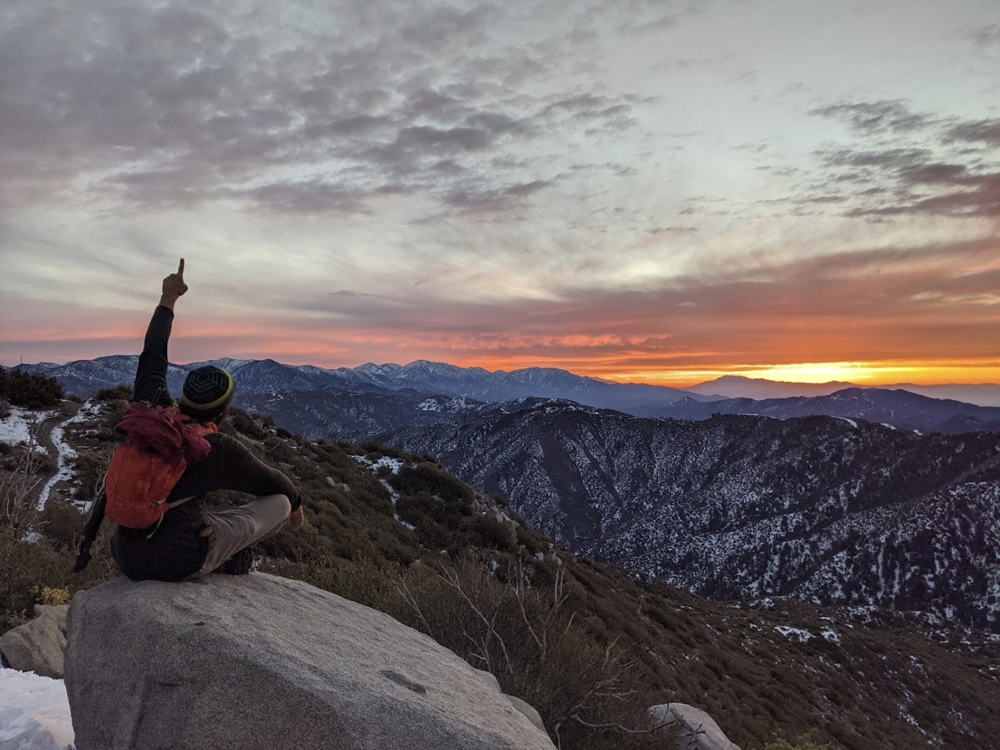
Josephine Peak Trail
8.3mi, 1.8k ft elevation gain | FIRETRAIL - NOSHADE - VIEWS - RUNNING
The pure firetrail version of Strawberry peak, this hike offers similar view payoffs but has less scrambling. Great in the winter when it snows as well as in the summer when you want to rise above the low cloud cover, as seen below
About 500ft above the summer inversion
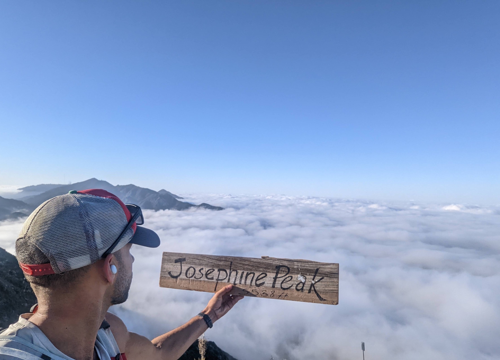